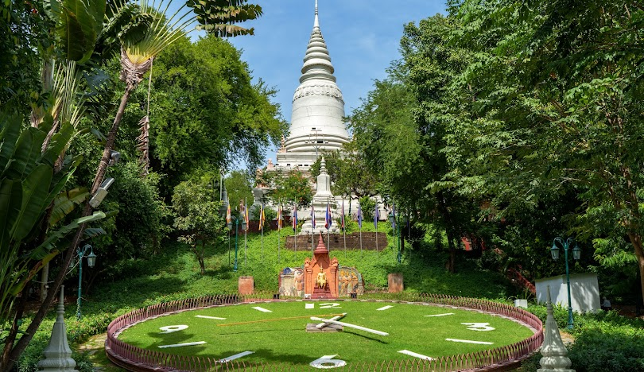

អំពីរាជធានីភ្នំពេញ
រាជធានីភ្នំពេញ គឺជារាជធានី និងជាទីក្រុងធំបំផុតរបស់ព្រះរាជាណាចក្រកម្ពុជា។ ទីក្រុងនេះស្ថិតនៅចំណុចប្រសព្វនៃទន្លេមេគង្គ ទន្លេសាប និងទន្លេបាសាក់។ ភ្នំពេញជាមជ្ឈមណ្ឌលនយោបាយ សេដ្ឋកិច្ច វប្បធម៌ ការអប់រំ និងពាណិជ្ជកម្មដ៏សំខាន់របស់ប្រទេស។
ប្រវត្តិសង្ខេប
ភ្នំពេញត្រូវបានបង្កើតឡើងតាំងពីសតវត្សទី១៥ ហើយត្រូវបានជ្រើសរើសជារាជធានីនៃកម្ពុជា។ ឈ្មោះ "ភ្នំពេញ" មានប្រភពមកពីលោកយាយពេញ ដែលបានរកឃើញព្រះពុទ្ធបដិមាចំនួនបួនអង្គអណ្តែតតាមទន្លេ និងបានសាងសង់វត្តភ្នំដើម្បីតម្កល់ព្រះពុទ្ធបដិមាទាំងនោះ។
កន្លែងទេសចរណ៍សំខាន់ៗ
- ព្រះបរមរាជវាំង
- វត្តភ្នំ
- សារមន្ទីរជាតិ
- វិមានឯករាជ្យ
- មាត់ទន្លេស៊ីសុវត្ថិ
ទីតាំងភូមិសាស្ត្រ
រាជធានីភ្នំពេញស្ថិតនៅភាគកណ្ដាលនៃប្រទេសកម្ពុជា និងជាចំណុចប្រសព្វនៃ ទន្លេមេគង្គ ទន្លេសាប និងទន្លេបាសាក់ ដែលធ្វើឱ្យទីក្រុងនេះមានសារៈសំខាន់ ក្នុងការដឹកជញ្ជូន ពាណិជ្ជកម្ម និងការអភិវឌ្ឍសេដ្ឋកិច្ច។